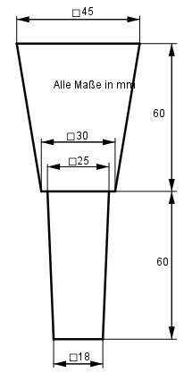
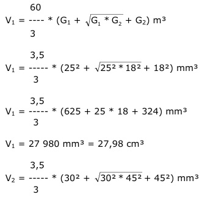

Aufgabe 272 Wie groß ist die Masse m des Verbindungsteils, wenn seine Dichte 7,85 g/cm³ beträgt?  Volumen V = Pyramidenstumpf1 + Pyramidenstumpf2  3,5 V2 = ----- * (900 + 30 * 45 + 2 025) mm³ 3 V2 = 85 500 mm³ = 85,5 cm³ m = (V1 + V2) * р = (27,98 cm³ + 85,5 cm³) * 7,85 g/cm³ = 891 g